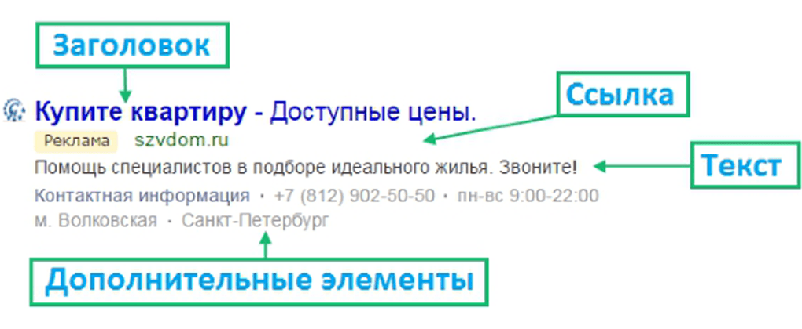
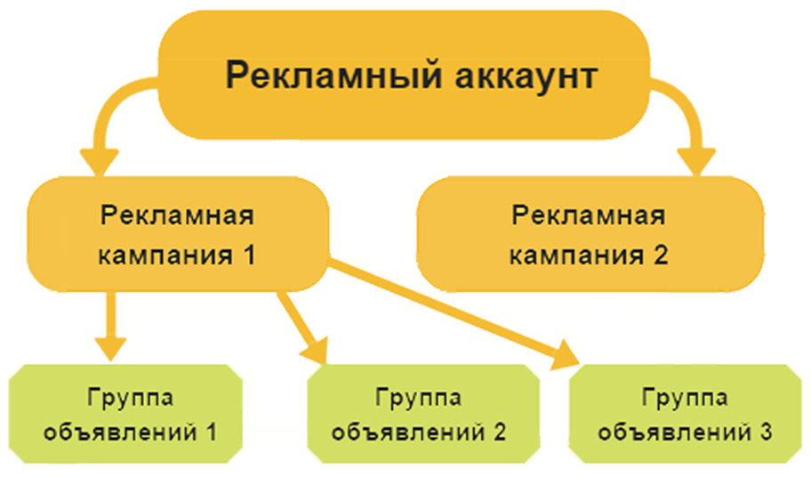

KMC Google AdWords
Прирост на 707%
Этапы проведения контекстной рекламы
-
Увеличение количества трафика
-
Привлечение целевой аудитории на сайт.
-
Рост количества конверсий
Также были запущены ремаркетинговые кампании
Контекстно-медийный ремаркетинг
(с использованием списков,
созданных в Google Analytics)
Поисковый ремаркетинг
(с использованием списков,
созданных в Google Ads)
Как выглядит контекстная реклама?
CTR — это ключевой показатель качества контекстного объявления, который показывает сколько пользователей кликает на объявление. Рассчитывается как отношение кликов по объявлению к его показам в процентах.

Структура рекламного аккаунта

Нужна Контекстая Реклама?
связаться с нами